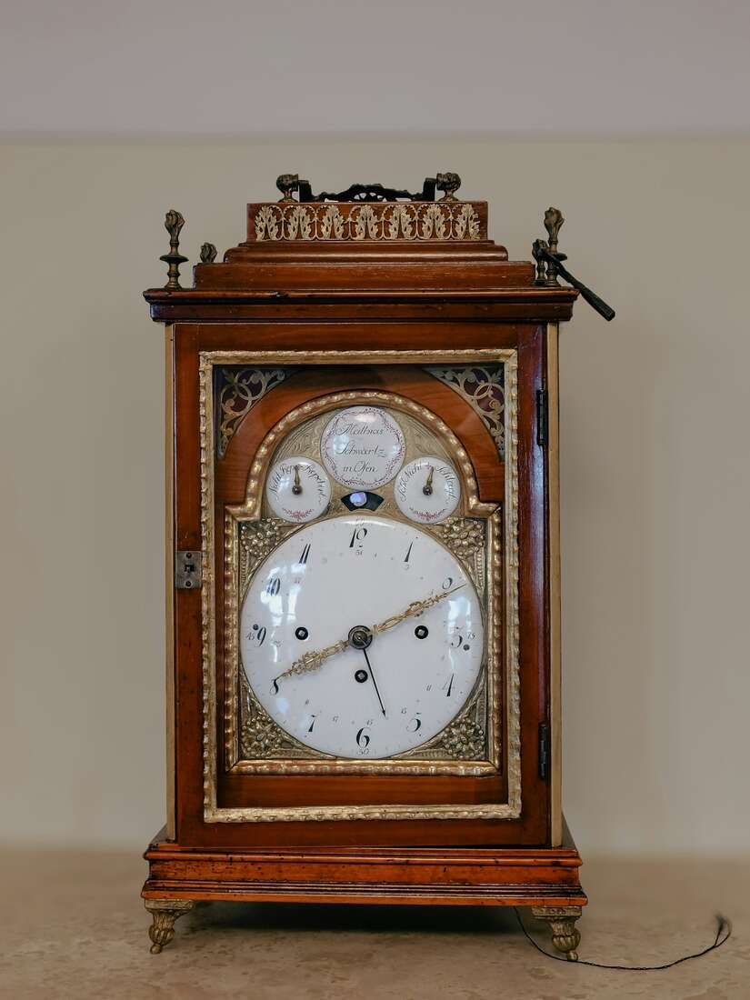
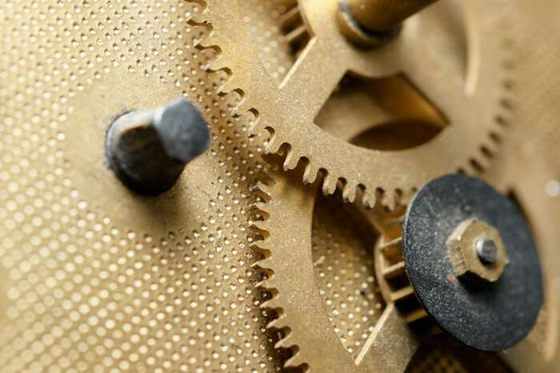

Just A Sec / Repairs
From the mantelpiece to the wrist.
Clocks are the speciality — the heavy, the delicate and the inherited. Watches are welcome too, from a fresh battery to a full service.

Clocks
Every kind of tick.
- 01
Mantel & bracket clocks
Cleaning, servicing and repairs to get them keeping time and striking properly again.
- 02
Grandfather & longcase clocks
Movements, weights, pendulums and chimes — the family heirloom, looked after.
- 03
Wall & regulator clocks
Pendulum and spring-driven wall clocks brought back into beat.
- 04
Cuckoo clocks
Chains, weights, bellows and the bird itself.
- 05
Carriage & antique clocks
Careful work on older, delicate movements and cases.
Watches
Small, but not an afterthought.

- 06
Mechanical & automatic watches
Servicing and repairs for watches that have stopped, slowed or started gaining.
- 07
Pocket watches
Old movements and hinged cases handled with care.
- 08
Batteries, glass & straps
The quick fixes: new batteries, replacement crystals, crowns and straps.
Example services — we'd confirm these with you. Every repair is assessed in person, so there's no price list here.
Know what you're bringing? Book a time.
Request an appointment